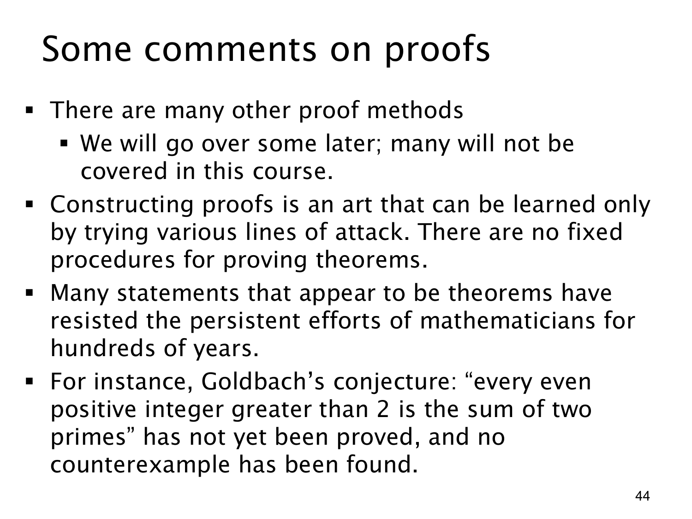

L1.3 · 第 44 页讲解原文
查看这一页课件

关于证明方法的几点提醒
这页是在已学过直接证明、逆否证明和反证法之后，提醒我们：证明方法并不只限于这几种。课件说后面还会接触一些方法，也有许多方法不在本课程范围内。
构造证明没有一套对所有定理都适用的固定程序。看到命题时，可以尝试展开定义、寻找合适的已证结果、从结论倒推需要的条件，或比较直接证明与间接证明哪条路线更清晰。失败的尝试有时能说明当前路线缺少什么，但不能据此断言命题为假。第 32 页从 3n+2=2k+1 出发暂时卡住，随后转向逆否证明，就是一个具体例子。
课件又指出，有些看似正确的陈述可能长期没有被证明。它举哥德巴赫猜想（Goldbach's conjecture）为例：每个大于 2 的正偶整数都可写成两个素数之和。课件在制作时将其作为“尚无证明，也未找到反例”的例子；这句话是课件的时代性状态描述，而非由本页推导出的数学结论。
这里应分清三个层次：验证许多个偶数符合猜想，只是支持它的证据；对所有允许的偶数给出有效论证，才是证明；找到哪怕一个真正不符合的偶数，便是反例，足以推翻原全称猜想。证明的训练，既包括学习现有方法，也包括判断每一步是否有充分依据。